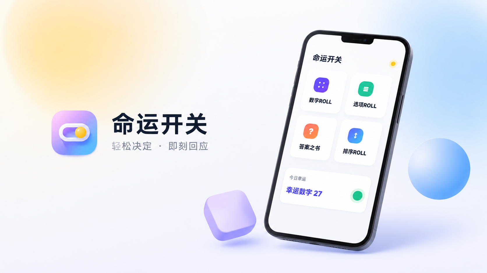

岗位增速↗
0倍
AI 岗位量同比暴涨
2026 年 1-2 月，AI 岗位数量同比增长约 12 倍，远高于新经济行业整体岗位增长速度。
数据来源：脉脉《2026年1-2月中高端人才求职招聘洞察》/ 中国日报网报道AI 不是未来才会发生的事，它已经进入招聘市场、办公场景、设计流程、内容生产和企业用人标准。现在学习 AI，不是追热点，而是在补未来的基础能力。
未来不会被 AI 淘汰的人，不是不用 AI 的人，
而是会用 AI 放大自己能力的人。
2026 年 1-2 月，AI 岗位数量同比增长约 12 倍，远高于新经济行业整体岗位增长速度。
数据来源：脉脉《2026年1-2月中高端人才求职招聘洞察》/ 中国日报网报道AI 岗位在新经济岗位中的占比，从 2025 年同期的 2.29% 提升到 2026 年 1-2 月的 26.23%。
数据来源：脉脉《2026年1-2月中高端人才求职招聘洞察》/ 中国日报网报道2026 年春招数据显示，AI 新发岗位平均月薪达到 60,738 元，比新经济行业平均月薪高出约 26%。
数据来源：脉脉《2026年1-2月中高端人才求职招聘洞察》/ 中国日报网报道微软与 LinkedIn 的 2024 工作趋势报告显示，全球 75% 的知识工作者已经在工作中使用生成式 AI。
数据来源：Microsoft & LinkedIn 2024 Work Trend Index一年时间，AI 岗位在新经济岗位中的占比从 2.29% 提升到 26.23%，说明 AI 已从少数技术岗位快速渗透到更多行业。
同样是新经济行业岗位，AI 岗位平均月薪明显更高。企业正在用更高薪资争夺 AI 人才，AI 能力正在形成真实的薪资溢价。
预计创造新岗位
预计岗位被替代
预计岗位净增长
AI 带来的不是简单的岗位消失，而是岗位能力重组。会 AI 的设计师、运营、电商人、剪辑师、老师和职场人，会更有竞争力。
来源：世界经济论坛《Future of Jobs Report 2025》AIGC 不是单一岗位，而是一组新的职业机会。它正在进入设计、运营、电商、短视频、办公、培训、产品和编程等多个方向。企业需要的不是只会聊天的人，而是能把 AI 用到真实项目里的人。
使用 AI 完成海报、电商图、品牌视觉、IP 设计、作品集等内容。
完成图生视频、文生视频、广告片、短视频分镜和视频包装。
生成产品场景图、商品主图、详情页、广告和短视频素材。
完成选题、脚本、文案、图片、视频和账号内容生产。
提升 PPT、文案、表格、会议纪要、方案和流程效率。
把多个 AI 工具连接成稳定流程，帮助团队提升内容生产与项目交付效率。
负责产品体验、用户场景、提示词模板、内容运营和数据分析。
使用 Codex、Cursor 搭建网站、小工具、自动化流程和 Agent。
不学 AI，不代表你马上失业；
但会 AI 的人，会比你更快、更省、更容易做出作品。
当别人一天能做 10 张图、3 条视频、5 个方案，而你还在用传统方式慢慢做，差距就会被迅速拉开。
AI 已经进入真实招聘市场和工作场景。越早掌握 AIGC 工具和工作流，越容易在求职、转型、副业和项目中建立优势。
不要求你有设计或编程基础。只要愿意动手练习，就能从一个真实项目开始建立自己的 AI 能力。
不知道从哪个工具开始，希望有人系统带着学。
提升出图、海报、电商图、IP 设计与作品集效率。
用 AI 做商品图、广告图、脚本和内容生产。
提升 PPT、文案、表格、汇报和方案效率。
系统学技能、做作品集、了解相关就业方向。
尝试 AI 接单、内容、IP、电商或自动化工具。
不是只学工具，而是围绕真实项目、真实交付和真实岗位需求，系统训练 AIGC 能力。
从一次练习到一套作品集，每个项目都对应真实应用场景。作品，是能力最直接的证明。
不是记住几个工具名称，而是建立一套可以持续迭代的实战能力。
设计教育从业者 / AIGC 实战讲师 / AI 内容创作者
王冠旭老师长期深耕设计教育与 AIGC 实战教学，拥有丰富的线上线下授课、课程研发、企业培训和项目实战经验。自 2022 年起系统研究 AI 绘画、AI 视频、AI 办公、AI 编程等方向，并将 AIGC 技术应用到商业设计、电商视觉、短视频内容、IP 设计、作品集制作和企业效率提升等真实场景中。
他曾任韩国 Kemong 设计公司 VD / PM、米你课堂联合创始人，参与 1+X 证书及多本设计教材编制，长期为设计学习者、职场人、电商从业者、内容创作者和转型人群提供系统化 AIGC 实战教学。
课程风格不讲空概念，不堆复杂术语，而是用简单直接的方式，把 AI 工具拆成真实项目流程，让学员从“看得懂”到“做得出”，最终形成自己的作品、案例和职业竞争力。
“不讲空概念，把 AI 工具拆成真实项目流程，让学员看得懂、跟得上、做得出、能落地。”
动效设计总监 / AIGC 动漫导演 / 影视后期讲师
老师长期深耕互联网 AI 动画设计、影视后期与 AIGC 商业应用，兼具一线项目经验和教学沉淀。擅长将 PR、AE、DaVinci、NUKE、Houdini、C4D 等工具整合为高效工作流，完成动画设计、影视包装和 AIGC 漫剧制作。
曾参与高校产教融合授课，为人工智能、影视后期等方向学生讲授基础理论、商业案例与项目制作方法；也曾在知名教培机构担任视频特效高级讲师与视觉传媒教学负责人，负责课程研发和实战案例设计。
课堂强调真实案例拆解和项目实操，把复杂技术逻辑转化为清晰、可执行的步骤，帮助学员快速理解 AIGC 工作流，并应用到漫剧、短剧、电商设计和商业视觉项目中。
“把复杂的技术流程拆成学生听得懂、做得出、能复用的项目方法。”
品牌视觉设计师 / 高校艺术设计讲师 / 美育产品研发
沈睦晗老师拥有意大利布雷拉美术学院本硕连贯制专业背景，长期深耕品牌视觉、产品创新、空间展陈与美育产品研发，兼具国际设计视野、高校教学沉淀和商业项目全案经验。
曾任高校艺术设计全职讲师，独立研发 6 门核心课程，指导 35 名本科生完成毕业设计与论文；同时主导校园艺术展、教育品牌 VI、美育赛事及线下活动，将设计策略转化为可落地、可复用的项目成果。
教学中融合意大利现代设计方法、真实商业案例与 ChatGPT、可灵、即梦等 AIGC 工具，把抽象的品牌、空间与产品设计方法拆解为清晰步骤，帮助学员建立审美、设计思维与高效 AI 工作流。
“因材施教、实战为王，让设计方法看得懂、做得出，也能真正落到项目中。”
UI 设计师 / AIGC 教育实践者 / 教学项目管理
杨晓坤老师深耕 UI 设计与 AIGC 教育七年有余，兼具一线产品设计、课程研发与教学管理经验。擅长 UI、动效交互、视觉设计及 AIGC 应用，能够完成 C 端、B 端产品与游戏化场景的完整视觉体系搭建。
曾参与腾讯视频多个核心版本迭代，并负责教育 App 游戏化场景及教师端授课工具设计；独立搭建三维设计课程体系，推动招生效益提升 200%、学员规模突破 1000 人，所带班级两获校级技术答辩第一名。
课堂坚持“技术驱动、实战先行”，以真实商业项目为主线，把 AI 生成技术融入设计工作流，通过案例拆解和针对性指导，帮助学员从会用工具进阶为能够独立完成项目的设计实践者。
“技术驱动、实战先行，让学员从会用工具走向能够独立解决设计问题。”
本网站由王冠旭老师完成整体策划、视觉设计与页面制作，也是老师将 AIGC 与网页落地能力结合的真实案例。
从商业视觉到动态内容，用真实作品展示老师在图片生成、视觉设计、视频包装和 AIGC 内容制作中的实战能力。

这是王冠旭老师完成的网站作品，可通过官网了解产品并直接下载 APP，展示从产品页面、视觉包装到发布落地的完整能力。
我们不只教你使用AI，更帮你把AI变成真正的职业竞争力。
不堆概念、不绕弯子，把复杂的AI知识讲得简单、直接、听得懂。
从基础工具开始一步步教学，没有设计和技术基础，也能轻松跟上课程。
每个模块都结合真实案例练习，不只是看老师演示，更要亲手完成项目。
学习不是为了记住几个按钮，而是做出能展示、能求职、能接单的作品。
从创意构思、AI生成、后期优化到最终交付，掌握完整的项目制作流程。
帮你筛选真正好用的工具和方法，减少盲目试错，把时间花在有效学习上。
提供提示词、项目框架和实战模板，学完可以直接应用到工作和项目中。
结合市场岗位和商业需求，帮助你理解AI如何用于工作、求职、接单和副业。
紧跟AI工具和行业变化持续更新内容，让你学到的能力不会快速过时。
关于课程、学习基础和学习成果，你关心的问题都在这里。
AIGC 当然可以自学，网上也有大量免费教程。
但“可以自学”和“能够系统学会、完成项目、做出作品、用于就业”并不是一回事。
很多人在自学过程中，通常会遇到这些问题：
课程真正解决的，不只是教大家点击哪个按钮，而是帮助大家建立一套完整的学习路径：
自学没有问题，但往往需要投入更多时间筛选内容、判断方向和反复试错。系统学习的价值，是帮助大家减少无效试错，用更清晰的路径，把零散知识真正转化为可以应用的能力。
课程的价值，不是让你“听过”，而是帮助你真正“做出来”。
现在使用 AI 生成图片和视频的门槛确实越来越低。
但会输入提示词、会点击生成，并不等于能够完成一套真正可用的商业作品。
作品之间真正的差距，通常体现在：
就像很多人都会使用相机，但并不是所有人都能成为摄影师；很多人都会使用 Photoshop，也并不代表所有人都能成为设计师。
工具门槛越低，审美、创意、项目执行能力和解决问题的能力反而越重要。
未来真正拉开差距的，不是谁会使用 AI，而是谁能用 AI 解决实际问题。
具体的软件、平台和模型确实会不断变化。今天使用的模型，未来可能升级，也可能被新的工具替代。
所以课程不能只教某一个软件的固定按钮，而应该重点训练可以迁移的底层能力，包括：
软件会变化，但这些能力不会轻易过时。就像 Photoshop 更新了很多年，设计师依然需要学习设计；相机越来越智能，摄影师也没有因此消失。
我们教的不只是某一个工具，而是一套能够跟随工具持续升级的工作方法。
证书可以作为学习经历和知识能力的一种证明，但仅靠证书，通常很难直接找到工作。
企业在招聘时，更关心的是：
因此，我们不会把课程重点只放在“考证”上，而是更重视项目训练和作品集建设。
在学习过程中，学生需要完成不同方向的实际项目，并将这些项目整理成可以用于求职、面试和能力展示的作品集。
证书证明你学过，作品证明你会做。
可以，而且我们认为这是非常合理的要求。
学费对每个人来说都不是小事，大家在报名前想了解老师的真实能力、教学经验和学生成果，是完全正常的。
学生可以重点查看：
同时也需要客观说明：老师的作品代表老师目前的专业能力，但学生最终能够达到什么程度，还与个人基础、学习时间、练习数量、审美能力和执行力有关。
我们不会承诺“报名以后人人都能立刻高薪就业”，但会认真做好学习路径、项目训练、作品指导和就业准备。
先看作品、再看课程、最后决定是否报名，这才是对自己负责。
课程不承诺固定就业，但会帮助你掌握工具能力、完成作品集、理解岗位方向，提高求职和接单竞争力。
可以。课程会从基础工具和基础操作开始讲，不要求学员一开始就懂设计或编程。
课程会尽量用简单直接的方式讲解，重点是跟着案例一步一步做出来。
具体学习周期将根据课程安排设置，报名咨询时可获取最新课程大纲与课表。
多数在线 AI 工具对配置要求不高。本地模型或复杂视频处理会有一定要求，可在报名前根据个人设备判断。
有。课程强调作品导向，会安排实战练习，并提供作品点评和优化建议。
可以。课程围绕商业案例训练，帮助学员逐步积累可展示的 AIGC 作品。
选择剧集，点击缩略图即可在线播放。